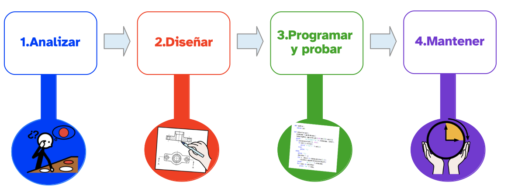

Diccionario
Ingeniería

Definición:
Es una actividad que transforma el conocimiento en algo práctico
Ejemplo:
La ingeniería electrónica sirve para diseñar y construir móviles.
Definición:
Es una actividad que transforma el conocimiento en algo práctico
Ejemplo:
La ingeniería electrónica sirve para diseñar y construir móviles.

Quizás no te hayas dado cuenta de que las actividades anteriores de este apartado constituyen una fase previa fundamental para la creación de cualquier programa, incluso de las apps para móviles.
Es por ello que ahora es un buen momento para hablar de qué es la ingeniería del software y cuáles son sus fases.
De esta forma, vas a descubrir que las apps se hacen siguiendo un proceso concreto que va definiendo distintos aspectos, algunos previos a la propia programación, como los que acabas de trabajar antes.
De aquí en adelante será preciso que tengas en mente estos aspectos a la hora de hablar del desarrollo de tus apps, en particular, y de cualquier software, en general.
A la hora de crear un programa de cualquier tipo, en particular una app, hay que asumir que se hará “ingeniería del software”, que, en esencia, no es otra cosa que aplicar las técnicas de la ingeniería tradicional a la creación y posterior mantenimiento de los programas informáticos.
El desarrollo de esta ingeniería del software se puede resumir en cuatro fases principales.
La primera fase se llama analizar y permite tener claro el objetivo y aquello que sea necesario para alcanzarlo. En esta fase se puede definir lo siguiente:
La segunda fase a la que hay que enfrentarse es la de diseñar. Ésta tiene que ver con el aspecto y la estructura que tendrá el programa. Entre los aspectos que habrá que definir aquí están:
Seguidamente, se pasa a la tercera fase que consiste en programar y probar. Se refiere directamente a la creación del software en sí e incluye aspectos como:
Finalmente, se llega a la cuarta fase que se denomina mantener. En ella se recogen las tareas de readaptación y actualización del programa creado, ya que las condiciones iniciales que dieron lugar al programa pueden cambiar y hay que poder adaptarse para que el software siga siendo operativo.
Definición:
Es una actividad que transforma el conocimiento en algo práctico
Ejemplo:
La ingeniería electrónica sirve para diseñar y construir móviles.
Los profesionales usan técnicas de ingeniería tradicional para crear los programas.
Las técnicas de ingeniería tradicional sirven para crear los programas informáticos.
También las técnicas de ingeniería tradicional sirven para mantener los programas informáticos.
Para hacer ingeniería sigue 4 pasos:
1. Analizar. Saber el objetivo y qué necesitas para conseguir el objetivo.
2. Diseñar. Pensar en cómo será el programa.
3. Programar y probar. Crear el programa y probar que funciona bien.
4. Mantener. Mejorar el programa cuando sea necesario.

Para hacer este ejercicio vais a trabajar en parejas.
Como podéis comprobar en la lectura anterior, en el esquema no aparece toda la información que ofrece el texto para cada una de las fases definidas.
Por tanto, es vuestra misión completar esa información.
Para ello, descargaos la ficha en pdf para rellenar que encontraréis a continuación en la que se han añadido unos recuadros adicionales al esquema anterior para que escribáis dentro un resumen de la información que falta.
Si lo veis conveniente, también podéis dibujarlo en el cuaderno y rellenarlo ahí.
Responde por escrito, en tu cuaderno, a las siguientes preguntas:
Como has podido ver antes, la ingeniería del software es una de las ramas de las ciencias de la computación que se engloban bajo el término general de “informática”.
Tanto a nivel de ciclos formativos como de universidad, existen multitud de posibilidades de trabajo que quizás quieras tener en cuenta para un futuro no tan lejano ya.
Aquí tienes el enlace a un vídeo informativo acerca de “informática y comunicaciones” de la FP de Andalucía y a continuación información de la Universidad de Granada acerca de las salidas profesionales de la carrera de informática, donde se engloba la ingeniería del software.
Orientación sobre el sector de informática y comunicaciones de la Formación Profesional:
Consulta el apartado de “perspectivas laborales” del grado en ingeniería informática perteneciente a la UGR (Universidad de Granada).
Obra publicada con Licencia Creative Commons Reconocimiento Compartir igual 4.0
{kind=link}